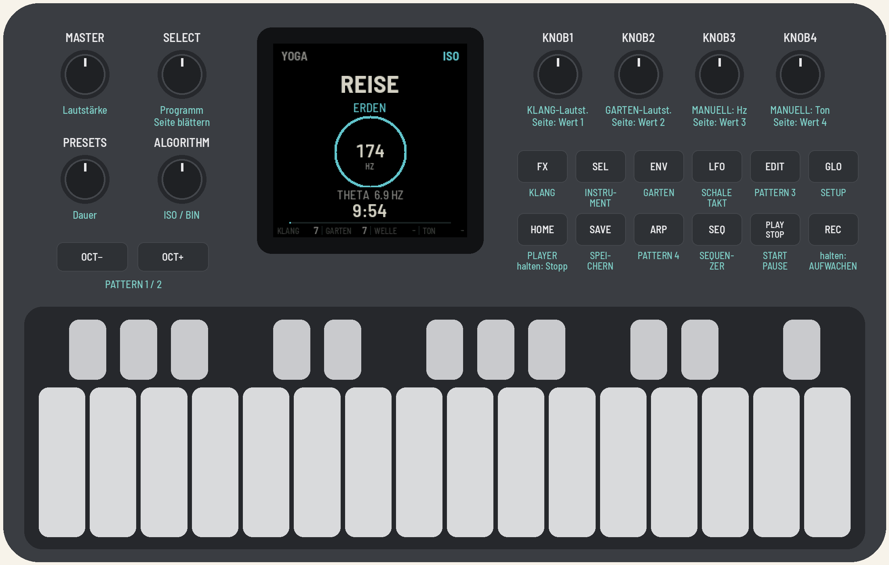
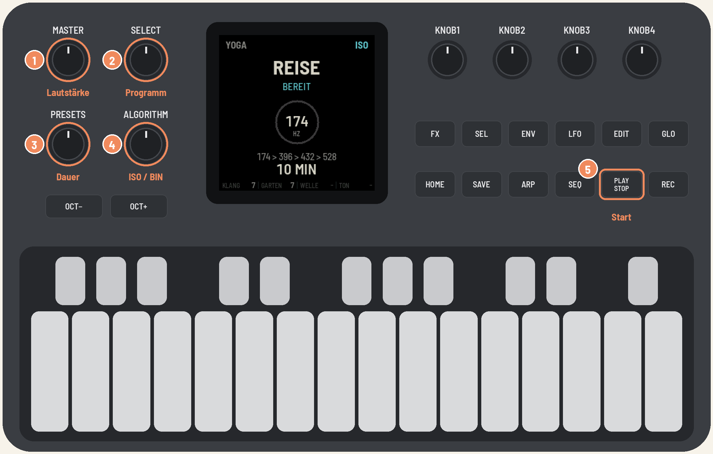
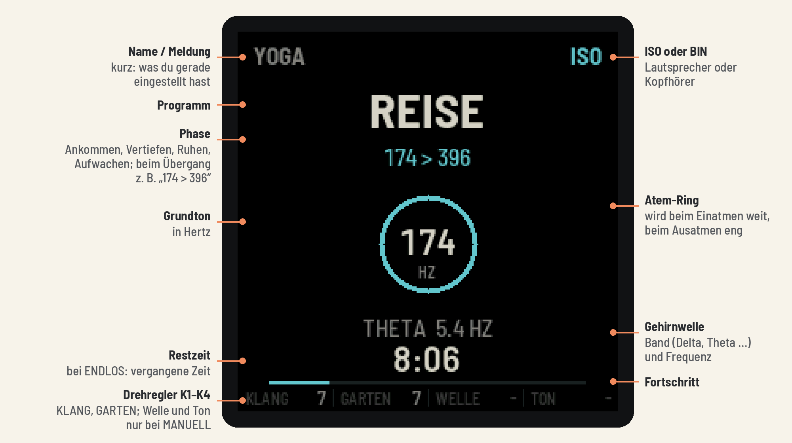
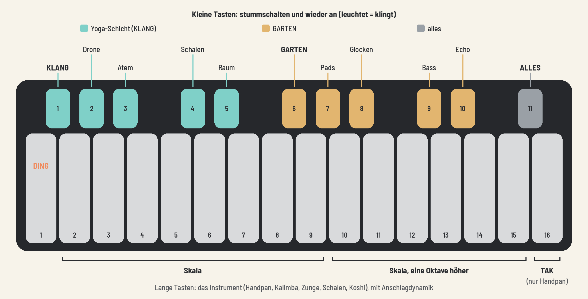

Anleitung
English · Deutsch
Klänge für Shavasana und Meditation – eine Firmware für den M-VAVE FM-1
FM1 YOGA verwandelt den kleinen Synthesizer FM-1 in einen ruhigen Klangbegleiter für Shavasana und die Meditation. Du wählst ein Programm, drückst PLAY, und das Gerät führt durch die Entspannung: mit einem tragenden Grundton, sanften Rhythmen, Atem-Rauschen, Klangschalen und einem schwebenden Ambient-Garten. Am Ende weckt es behutsam wieder auf. Auf der Tastatur spielst du dazu eine Handpan, Kalimba, Klangschalen oder ein Windspiel.

FM1 YOGA erzeugt Entspannungsklänge. Es ist kein medizinisches Verfahren und verspricht keine Heilwirkung. Wer zu Anfällen neigt, sollte pulsierende Klänge (ISO) mit Vorsicht nutzen. Eine andere Firmware zu installieren geschieht auf eigenes Risiko. Die Original-Firmware von M-VAVE lässt sich jederzeit zurückspielen (siehe Zurück zur Original-Firmware). FM1 YOGA ist ein unabhängiges Projekt und nicht mit M-VAVE verbunden.
Was FM1 YOGA kann
Zwei Klangschichten, die durch denselben Raum klingen:
- KLANG, die Yoga-Schicht, mit festen Frequenzen: - ein Grundton (Drone) auf 174 Hz (erdend), 396 Hz (loslassen), 432 Hz (Herz) oder 528 Hz (Wandlung) - ein Gehirnwellen-Rhythmus: Theta (4–7 Hz) zum Ankommen, Delta (0,5–3 Hz) in der Tiefe, Beta (15–18 Hz) nur beim Aufwachen - Atem-Rauschen wie Meeresbrandung, das im Atemtakt an- und abschwillt - Klangschalen bei jedem Phasenwechsel und beim Aufwachen, dazu seltene, leise Glöckchen
- GARTEN, die musikalische Schicht (aus AMB-1): - vier atmende Pads, die langsam wechselnde Akkorde bilden - Glocken auf Tape-Loops unterschiedlicher Länge, wahlweise gespielt von einem Instrument der Tasten - ein gleitender Bass - Tape-Echo, ein langer Tape-Loop und ein großer Plattenhall
Der Garten ist immer auf den Grundton der Yoga-Schicht gestimmt. Bei HERZ steht er also genau auf 432 Hz.
Dazu:
- 6 Programme: ERDEN, LOSLASSEN, HERZ, WANDLUNG, REISE (alle vier Grundtöne nacheinander) und MANUELL
- Dauer 5, 10, 15, 20, 30 Minuten oder ENDLOS
- Auch für die Meditation: als ruhiger Timer mit sanftem Ende, mit festem Rhythmus in MANUELL oder ENDLOS
- Kein Durchlauf klingt gleich: Jeder Start würfelt Phasenlängen, Rhythmen, Klangfarben und den Garten neu.
- Sanfte Übergänge ohne Lautstärke-Einbrüche, eine behutsame Aufwachphase am Ende
- Ein Instrument auf den Tasten, mit Anschlagdynamik und jederzeit spielbar: Handpan, Kalimba, Zungentrommel, Klangschalen oder Koshi-Windspiel
- Stummschalten jedes Teils mit den kleinen Tasten
- Sequenzer: vier eigene Pattern live einspielen, in jedem Programm
- Sprache: Deutsch, English oder Sanskrit
- ein stiller Takt auf dem Display und/oder der LFO-Taste, als lautloses Metronom
- Viele Feineinstellungen, die meisten auf AUTO, und alles dauerhaft speicherbar
Ausprobieren ohne Gerät
Der Emulator führt genau dieselbe Firmware im Browser aus, mit Ton, bedienbar mit der Maus oder der Computertastatur: https://michamilz.github.io/fm1-yoga/emu/
Klick auf „Switch on“, damit der Ton startet. Im Emulator gibt es keine Anschlagdynamik.
Installieren
Du brauchst ein M-VAVE FM-1, ein USB-Datenkabel (ein reines Ladekabel reicht nicht) und einen Computer mit Chrome oder Edge.
FM1 YOGA läuft auf beiden bekannten Ausführungen des FM-1: mit dem ursprünglichen Flash-Speicher (Puya P25Q80) und mit dem UC25HQ80, den Geräte seit Herbst 2026 haben. Auf diesen neueren Geräten speichern die Versionen bis 1.0-rc2 nichts (SAVE schlägt fehl) und können aus sich heraus kein Update installieren. Bring so ein Gerät dann mit dem Rettungsskript (siehe Zurück zur Original-Firmware) auf die Original-Firmware und installiere FM1 YOGA von dort neu.
Mit dem Web-Installer (empfohlen)
- Öffne den Installer: https://michamilz.github.io/fm1-yoga/install/
- Verbinde das FM-1 per USB mit dem Computer und schalte es ein.
- Klicke Install und erlaube den MIDI-Zugriff, wenn der Browser fragt.
- Trenne das Kabel nicht, solange geschrieben wird. Danach startet das FM-1 neu, mit FM1 YOGA.
Über die Kommandozeile
Lade die Firmware-Datei (z. B. yoga-1.0.fwsc) von der Releases-Seite und hol dir den Quellcode:
git clone --recursive https://github.com/michamilz/fm1-yogaInstalliere Python 3 und die MIDI-Pakete:
pip3 install mido python-rtmidiDann im Ordner fm1-yoga:
python3 base/tools/fm1_install.py yoga-1.0.fwscDeine Daten beim Wechsel der Firmware
Jede Firmware speichert ihre Daten auf ihre eigene Art im selben Flash-Speicher des FM-1. Sichere vor dem Wechsel deine Projekte, Sounds und Samples mit der Backup-Funktion der Firmware, die gerade läuft.
- FM1 YOGA speichert nur seine Einstellungen. Dafür nutzt es den Speicherbereich, in dem auch andere Firmware auf Basis von Felucca bzw. fm1-base (z. B. AMB-1) ihre Einstellungen oder Projekte ablegt. Nach einem Wechsel kann dort Gespeichertes einer anderen Firmware verloren sein.
- Umgekehrt liest FM1 YOGA keine Daten anderer Firmware. Findet es keine eigenen Einstellungen, startet es mit den Standardwerten.
- Die Projekte und Samples der Original-Firmware von M-VAVE liest FM1 YOGA nicht. Wer zurückwechselt, spielt sie aus seinem Backup zurück.
Zurück zur Original-Firmware
Im Web-Installer gibt es unten „Back to the stock firmware“. Lade dort die Datei FM-1 V15 über den angegebenen Link herunter, wähle sie aus und drücke den Knopf. M-VAVEs eigenes Update-Programm (M-UPGRADE) funktioniert ebenfalls.
Wenn das FM-1 zweimal hintereinander nicht richtig startet, startet es im Safe Mode. Dann ist kein Ton zu hören, aber der Web-Installer erreicht das Gerät weiterhin. Ist der Bildschirm ganz schwarz und das Gerät für den Installer unsichtbar, hilft das Rettungsskript von felucca-bsp. Es läuft auf einem Mac, mit dem normalen USB-Kabel:
bash -c "$(curl -fsSL https://raw.githubusercontent.com/hugelton/felucca-bsp/main/tools/fm1_rescue.sh)"Das Skript sichert zuerst den Speicher des FM-1, fragt vor dem Schreiben nach und spielt dann die Original-Firmware von M-VAVE auf.
Schnellstart: das erste Shavasana

- MASTER: Lautstärke einstellen. Am Anfang lieber leise; das Programm blendet ohnehin sanft ein.
- SELECT: Programm wählen, z. B. REISE oder HERZ.
- PRESETS: Dauer wählen, z. B. 10 MIN.
- ALGORITHM: ISO für Lautsprecher im Kursraum, BIN für Kopfhörer.
- PLAY: Start.
Das Programm blendet über 20–30 Sekunden ein. Danach läuft alles von selbst:
- PLAY pausiert und setzt fort (mit 2 Sekunden Ein- und Ausblenden).
- REC eine Sekunde halten beginnt sofort das Aufwachen.
- HOME zwei Sekunden halten blendet aus und beendet.
- Am Ende erscheint NAMASTE. PLAY startet einen neuen Durchlauf, SELECT wählt gleich das nächste Programm und stellt es startbereit, HOME kehrt in den Ruhezustand zurück.
Für die Meditation
FM1 YOGA begleitet auch die Meditation, allein oder in der Gruppe.
- Als Timer: Wähle mit PRESETS die Dauer, 5 bis 30 Minuten oder ENDLOS. Am Ende führt die Aufwachphase mit drei Klangschalen sanft zurück, wie die Glocke am Ende einer Sitzung.
- Ein fester Rhythmus: In MANUELL stellst du mit K3 die Wellenfrequenz ein, Theta (4–7 Hz) für eine wache, tiefe Meditation oder Delta für tiefe Ruhe, und mit K4 den Grundton.
- Allein mit Kopfhörern BIN, in der Gruppe über Lautsprecher ISO.
- Atem: Der Ring auf dem Display und der LED-Atem auf den Tasten geben ein ruhiges Atemtempo vor. Das Tempo stellst du unter KLANG → ATEM ein (3–8 Züge pro Minute).
- Zählen ohne Ton: Der stille Takt (GLO → TAKT) leuchtet im festen Tempo, etwa um Atemzüge zu zählen.
- Weniger ist mehr: Mit der kleinen Taste 6 schaltest du den GARTEN stumm. Dann bleiben Grundton, Atem und Klangschalen.
Das Gerät im Überblick
| Bedienelement | Funktion |
|---|---|
| MASTER | Gesamtlautstärke |
| SELECT | Programm wählen (im Stillstand und nach dem Ende); auf den Einstellungsseiten: Unterseiten blättern |
| PRESETS | Dauer bzw. Timer (im Stillstand) |
| ALGORITHM | ISO oder BIN, jederzeit umschaltbar |
| K1 / K2 (auf dem Home-Bildschirm) | Lautstärke KLANG / GARTEN |
| K3 / K4 (auf dem Home-Bildschirm) | im MANUELL-Modus: Wellenfrequenz / Grundton |
| K1–K4 (auf den Einstellungsseiten) | die vier Werte der Seite |
| HOME | zurück zum Player; 2 s halten: Stopp |
| FX | Seite KLANG (Yoga-Schicht) |
| ENV | Seite GARTEN |
| SEL | Seite INSTRUMENT (die Tastatur) |
| GLO | Seite SETUP (LED-Atem, Dimmen, Sprache, stiller Takt) |
| PLAY | Start, Pause, Weiter; nach dem Ende: neuer Durchlauf |
| REC | 1 s halten: jetzt aufwachen; auf der Seite SEQUENZER: Aufnahme an/aus |
| SAVE | Einstellungen dauerhaft speichern; leuchtet, solange etwas geändert ist |
| Lange Tasten | das Instrument spielen |
| Kleine Tasten | Teile stummschalten |
| LFO | schlägt eine Klangschale an, solange ein Programm läuft; leuchtet im Takt, wenn der stille Takt auf LFO oder BEIDE steht |
| SEQ | Seite SEQUENZER |
| OCT−, OCT+, EDIT, ARP | Pattern 1, 2, 3, 4 |
Eine Einstellungsseite schließt du mit derselben Taste wieder oder mit HOME. Die Taste der offenen Seite leuchtet, PLAY leuchtet grün, solange ein Programm läuft.
Der Bildschirm

Der Ring in der Mitte atmet mit: Er wird beim Einatmen weit und beim Ausatmen eng. Er eignet sich als ruhige Atemhilfe. Nach 30 Sekunden ohne Bedienung wird die Anzeige gedimmt; das lässt sich unter SETUP ändern.
| <img src="../../manual/img/screen-bereit.png" width="240" alt="Bereit: REISE, 10 MIN"> | <img src="../../manual/img/screen-laeuft.png" width="240" alt="Ein Programm läuft"> | <img src="../../manual/img/screen-uebergang.png" width="240" alt="Übergang 174 > 396"> |
| Bereit: Programm und Dauer | Läuft: Phase, Rhythmus, Restzeit | Übergang bei REISE |
| <img src="../../manual/img/screen-pause.png" width="240" alt="Pause"> | <img src="../../manual/img/screen-aufwachen.png" width="240" alt="Aufwachen"> | <img src="../../manual/img/screen-namaste.png" width="240" alt="Namaste"> |
| Pause | Aufwachen | Ende |
Die Programme
| Programm | Grundton | Ablauf |
|---|---|---|
| ERDEN | 174 Hz | Ankommen (Theta) → Vertiefen → Ruhen (Delta) |
| LOSLASSEN | 396 Hz | gleicher Ablauf |
| HERZ | 432 Hz | gleicher Ablauf |
| WANDLUNG | 528 Hz | gleicher Ablauf |
| REISE | 174 → 396 → 432 → 528 Hz | von Theta nach Delta, mit weichen Übergängen |
| MANUELL | frei wählbar | Grundton und Wellenfrequenz selbst einstellen |
So läuft ein Programm ab:
- Einblenden über 20–30 Sekunden, mit einer Klangschale.
- Die Phasen des Programms. Der Rhythmus sinkt dabei langsam von Theta in Delta.
- Aufwachen über 60–90 Sekunden: Der Rhythmus steigt sanft über Theta und Alpha bis in Beta, der Klang wird heller, und es erklingen drei Klangschalen.
- Ausblenden in die Stille, dann NAMASTE.
Übergänge bei REISE: Zwei Grundtöne blenden über 35–55 Sekunden ineinander, ohne dass die Lautstärke einbricht oder ein Ton „rutscht“. Während der Überblendung zeigt der Bildschirm z. B. „174 > 396“.
Der Wechsel kündigt sich an, damit du beim Spielen rechtzeitig Platz lässt:
| Wann | Lange Tasten | Bildschirm |
|---|---|---|
| 30 Sekunden vorher | pulsieren ruhig und gedimmt | „WECHSEL IN 30“ zählt herunter, der Ring wird sandfarben |
| während des Übergangs | leuchten dauerhaft gedimmt: besser nicht spielen | „174 > 396“, der Ring bleibt sandfarben |
| danach | wieder der LED-Atem | Ring wieder türkis |
Die Ankündigung erscheint immer, auch wenn der LED-Atem aus ist. Bei einem neuen Grundton in MANUELL beginnt der Wechsel sofort, dort gibt es nur die zweite Stufe.
ENDLOS (PRESETS ganz nach rechts) gibt es in allen Programmen. Der Ablauf ist der eines 20-Minuten-Programms, danach bleibt es in der Ruhephase (Delta, bei REISE auf 528 Hz), bis du REC 1 s hältst. Statt der Restzeit zeigt der Bildschirm dann die vergangene Zeit.
MANUELL
<img src="../../manual/img/screen-manuell.png" width="240" align="right" alt="MANUELL: 432 Hz, Theta 5.0 Hz, 20 MIN">
Im manuellen Modus bestimmst du selbst:
- K3: Wellenfrequenz 0,5–7,0 Hz (Delta oder Theta)
- K4: Grundton 174, 396, 432 oder 528 Hz
- PRESETS: Timer 5–60 Minuten oder ENDLOS
Beides lässt sich auch während des Laufens ändern. Ein neuer Grundton blendet in 10 Sekunden weich über, und der Garten wechselt mit in die neue Tonart. Mit Timer sind die letzten 60–90 Sekunden der eingestellten Zeit die Aufwachphase.
<br clear="right">
Kein Durchlauf klingt gleich. Bei jedem Start werden zufällig variiert:
- die Länge der Phasen (±15 %) und die genauen Wellenfrequenzen innerhalb ihres Bandes
- Obertöne, Schwebung und Atemtempo (sie wandern zusätzlich langsam weiter)
- wann Klangschalen und Glöckchen erklingen
- das Rezept des Gartens: Tonart, Pad-Klang (Rhodes oder Voices), Tempo, Dichte, Hall
- bei REISE manchmal die Reihenfolge von 396 und 432 Hz
ISO oder BIN: Lautsprecher oder Kopfhörer
Beides macht denselben Gehirnwellen-Rhythmus hörbar, zum Beispiel 5 Hz Theta, aber auf verschiedene Weise:
| ISO (isochron) | BIN (binaural) | |
|---|---|---|
| Wie es funktioniert | Die Lautstärke des Grundtons pulsiert weich im Takt | Links klingt z. B. 432 Hz, rechts 437 Hz; das Gehirn hört den Unterschied von 5 Hz als Schweben |
| Wiedergabe | Lautsprecher oder Kopfhörer | nur Kopfhörer |
| Für Gruppen | ja | nein |
| Wirkung | spürbar, direkt | subtil |
Faustregel: Im Kurs mit Lautsprecher ISO, allein mit Kopfhörern BIN. Umschalten geht jederzeit mit ALGORITHM, auch während ein Programm läuft. Oben rechts steht ISO (türkis) oder BIN (sandfarben).
Die Tastatur: Instrumente und Stummschalten

Lange Tasten: das Instrument
Die 16 langen Tasten spielen ein Instrument, jederzeit: im Stillstand, während eines Programms und nach dem Ende. Je fester du anschlägst, desto lauter und heller klingt es.
- Taste 1 ist das Ding, der tiefe Mittelton.
- Tasten 2–9 sind die acht Töne der Skala.
- Tasten 10–15 sind dieselbe Skala eine Oktave höher.
- Taste 16 ist bei der Handpan das Tak, das Klopfen auf den Rand. Bei den anderen Instrumenten spielt sie den nächsten Ton der Skala.
| Instrument | Klang |
|---|---|
| HANDPAN | warm, schimmernd, mit dem Tak auf Taste 16 |
| KALIMBA | gezupfte Metallzungen, kurz und hell, eine Oktave höher |
| ZUNGE | Zungentrommel: wie die Handpan, runder und dunkler |
| SCHALEN | jede Taste eine Klangschale, weicher Anschlag, langer Nachklang |
| KOSHI | Windspiel: Jede Taste lässt 3–6 Klangstäbe nacheinander erklingen, wie ein Windhauch |
Alle Instrumente sind auf den Yoga-Grundton gestimmt, und die Skala passt immer: Es kann nichts „falsch“ klingen.
Bis zu acht Töne klingen gleichzeitig. Kommt ein weiterer dazu, blendet der leiseste weich aus. Wird die Rechenzeit knapp, nimmt die Firmware vorübergehend Stimmen weg (mindestens vier bleiben), statt zu knacken.
Kleine Tasten: stummschalten
Die elf kleinen Tasten schalten Teile weich stumm und wieder an (1,5 Sekunden Überblendung). Was klingt, leuchtet; eine stumme Taste ist dunkel.
| Kleine Taste | schaltet stumm |
|---|---|
| 1 | die ganze Yoga-Schicht (KLANG) |
| 2 · 3 · 4 · 5 | Drone · Atem · Schalen · Raum |
| 6 | den ganzen GARTEN |
| 7 · 8 · 9 · 10 | Pads · Glocken · Bass · Echo |
| 11 | alles (das Instrument bleibt spielbar) |
- Die eingestellten Pegel bleiben erhalten. Stumm ist nur ein Schalter.
- Eine Gruppe (Taste 1 oder 6) merkt sich die Zustände ihrer Teile.
- Ein laufendes Programm läuft weiter, auch wenn alles stumm ist. Taste 11 eignet sich zum Beispiel für eine Ansage im Kurs.
- Gespeichert wird das nicht: Nach dem Einschalten klingt alles.
Der Sequenzer: eigene Pattern
<img src="../../manual/img/screen-sequenzer.png" width="240" align="right" alt="Die Seite SEQUENZER: Tempo, Länge und die vier Pattern">
Du kannst vier eigene Pattern einspielen. Sie laufen in allen Programmen und wiederholen sich, bis du ein anderes wählst. Ein Pattern merkt sich, was du gespielt hast: Tasten, Klangschalen und Stummschaltungen. Die Tonhöhe kommt vom laufenden Programm. Bei REISE wandert ein Pattern deshalb mit dem Grundton mit, und auch Instrument und Skala kannst du nachträglich wechseln.
Pattern 1–4 liegen auf OCT−, OCT+, EDIT und ARP. Spielt ein Pattern einen Ton, leuchtet die zugehörige lange Taste kurz auf.
<br clear="right">
Einspielen
- Starte ein Programm mit PLAY. Aufgenommen wird nur, solange eins läuft.
- Drücke SEQ. Mit K1 stellst du das Tempo ein, mit K2 die Länge.
- Drücke REC. Das Pattern läuft los, REC blinkt im Takt.
- Spiele auf den langen Tasten. Mit LFO schlägst du eine Klangschale an, die kleinen Tasten schalten stumm.
- Das Pattern läuft als Schleife, du kannst also Runde für Runde etwas dazulegen.
- Drücke REC, um die Aufnahme zu beenden, und SAVE, um die Pattern dauerhaft zu speichern.
Alles wird auf das nächste Achtel gerundet. Ein Schritt ist eine Achtelnote, 32 Schritte dauern bei Tempo 40 also 24 Sekunden. Ein Pattern fasst bis zu 96 Ereignisse. Ist es voll, zeigt das Display VOLL.
Zum Löschen öffnest du die Seite SEQUENZER und hältst die Pattern-Taste 2 Sekunden. Auf dieser Seite löst das Halten von REC übrigens keine Aufwachphase aus. Dafür gehst du zurück auf HOME.
Pattern wechseln
Der Wechsel kommt immer am Ende des laufenden Durchlaufs, so bleibt alles im Takt:
| Du machst | Das passiert |
|---|---|
| keine Taste drücken | Das laufende Pattern wiederholt sich |
| eine andere Pattern-Taste drücken | Sie blinkt und ist vorgemerkt. Am Ende des Durchlaufs wird gewechselt, sie leuchtet dann fest |
| noch eine andere Taste drücken, solange die erste blinkt | Die neue Wahl ersetzt die alte |
| dieselbe blinkende Taste nochmal drücken | Die Vormerkung ist zurückgenommen |
| die leuchtende Taste drücken | Sie blinkt, das Pattern läuft zu Ende, danach ist Ruhe |
Im Stillstand wählst du mit der Pattern-Taste aus, womit PLAY beginnt. Nochmal drücken nimmt die Wahl zurück; ohne Wahl läuft das Programm wie gewohnt ohne Pattern. Während ein Programm ohne Pattern läuft, startet die Taste sofort.
Stummschalten im Pattern
- Ein Pattern setzt beim Start nichts zurück. Es führt nur seine aufgezeichneten Schaltungen aus. Ein stummer Teil bleibt also stumm, bis ein Pattern oder du ihn wieder einschaltest.
- Drückst du ohne Aufnahme eine kleine Taste, gilt das sofort. Hat das Pattern an einer Stelle eine eigene Schaltung für diesen Teil, greift sie beim nächsten Durchlauf.
In der Aufwachphase
Mit Beginn der Aufwachphase blendet das Pattern in 8 Sekunden aus, und eine laufende Aufnahme endet. So führt alles in die Stille. Beim nächsten Start ist das Pattern wieder ausgewählt.
Einstellungen
Alle Einstellungsseiten funktionieren gleich:
- K1–K4 ändern die vier Werte der Seite.
- SELECT blättert durch die Unterseiten; die Punkte unten zeigen, wo du bist.
- SAVE speichert alles dauerhaft.
Viele Werte stehen anfangs auf AUTO (gepunktete Linie). Dann würfelt jeder Start den Wert neu. Drehst du den Regler, gilt dein fester Wert. Ganz nach links gedreht steht er wieder auf AUTO. Änderungen wirken sofort, auch während ein Programm läuft.
KLANG (FX): die Yoga-Schicht
| <img src="../../manual/img/screen-klang.png" width="240" alt="KLANG: Übersicht"> | <img src="../../manual/img/screen-klang-drone.png" width="240" alt="KLANG: DRONE"> |
| Übersicht: die vier Pegel | Unterseite DRONE |
| Unterseite | K1 | K2 | K3 | K4 |
|---|---|---|---|---|
| Übersicht | Drone | Atem | Schalen | Raum |
| DRONE | Pegel | Obertöne (AUTO, 0–10) | Schwebung (AUTO, 0–10) | Puls-Tiefe bei ISO (AUTO, 0–10) |
| ATEM | Pegel | Tempo (AUTO, 3–8 Züge/Min.) | Farbe der Brandung (dunkel – hell) | Welle: wie stark die Drone mitatmet |
| SCHALEN | Pegel | Glöckchen (AUTO, 0 = aus – 10 = oft) | Tonlage (tief, mittel, hoch) | Nachklang (kurz – lang) |
| RAUM | Hall-Anteil | Hallgröße (AUTO, 0–10) | Echo-Anteil | – |
GARTEN (ENV): die musikalische Schicht
| <img src="../../manual/img/screen-garten.png" width="240" alt="GARTEN: Übersicht"> | <img src="../../manual/img/screen-garten-pads.png" width="240" alt="GARTEN: PADS"> |
| Übersicht: die vier Pegel | Unterseite PADS |
| Unterseite | K1 | K2 | K3 | K4 |
|---|---|---|---|---|
| Übersicht | Pads | Glocken | Bass | Echo |
| PADS | Pegel | Farbe (AUTO, Rhodes, Voices) | Helligkeit (AUTO, 0–10) | Akkordwechsel (AUTO, 0 = selten – 10 = oft) |
| GLOCKEN | Instrument (Glocken, Handpan, Kalimba, Zunge, Schalen, Koshi) | Dichte (AUTO, 0–10) | Klang (AUTO, weich – hell) | Oktave (AUTO, −2 bis +2) |
| BASS | Pegel | Oktave (AUTO, −1 bis +1) | Gleiten (AUTO, 0–10) | Quinte (AUTO, 0–10) |
| ECHO | Pegel | Echozeit (AUTO, 1/4. bis 4 Takte) | Hall des Gartens (AUTO, 0–10) | Bewegung (AUTO, 0–10) |
Die Glocken-Loops können statt der Glocken auch eines der Instrumente der Tasten spielen: Handpan, Kalimba, Zunge, Klangschalen oder Koshi. Das wählst du mit K1 auf der Unterseite GLOCKEN; der Pegel der Glocken steht dort deshalb nicht, sondern auf der Übersicht (K2). Die Loops haben dafür eigene Stimmen und nehmen dir beim Spielen auf den Tasten keine Töne weg. Instrument, Skala und Nachklang der Tasten (SEL) gelten für die Loops nicht: sie spielen die Töne des Gartens, und KLANG macht das Instrument heller oder weicher.
INSTRUMENT (SEL): die Tastatur
| <img src="../../manual/img/screen-instrument-spiel.png" width="240" alt="Instrument: SPIEL"> | <img src="../../manual/img/screen-instrument-klang.png" width="240" alt="Instrument: KLANG"> | <img src="../../manual/img/screen-instrument-raum.png" width="240" alt="Instrument: RAUM"> |
| SPIEL | KLANG | RAUM |
| Unterseite | K1 | K2 | K3 | K4 |
|---|---|---|---|---|
| SPIEL | Instrument | Pegel | Skala | Ding (AUTO = folgt dem Grundton, oder fest 174/396/432/528) |
| KLANG | Nachklang | Helligkeit | Dynamik (0 = jeder Anschlag gleich) | – |
| RAUM | Hall | Echo | – | – |
Skalen: KURD (Moll, der Klassiker), CELTIC (Moll), INTEGRAL, PYGMY, HIJAZ (orientalisch), SABYE (Dur, hell), AKEBONO (japanisch, sehr ruhig). Mit Ding auf AUTO liegt das Ding auf 174, 198, 216 oder 264 Hz, je nach Grundton.
SETUP (GLO)
<img src="../../manual/img/screen-setup.png" width="240" align="right" alt="SETUP: LED-Atem, Dimmen, Sprache">
Zwei Unterseiten, SELECT blättert:
| SYSTEM | |
|---|---|
| K1 LED-Atem | An: Ein gedämpftes Licht wandert beim Einatmen über die langen Tasten nach rechts und beim Ausatmen zurück |
| K2 Dimmen | Das Display dimmt nach 30 s oder 2 min ohne Bedienung, oder nie |
| K3 Sprache | Deutsch, English, Sanskrit |
| Unten: CPU, XRUN, OVER | die Auslastung der Klangberechnung. XRUN zählt Blöcke, die zu spät fertig wurden (sollte 0 bleiben), OVER, wie oft die Notbremse gegriffen hat |
| TAKT | |
|---|---|
| K1 Tempo | ein stiller, fester Takt für dich als Lehrkraft: AUS oder 20–120 pro Minute |
| K2 Anzeige | DISPLAY (ein Punkt oben im Display leuchtet zu jedem Schlag auf), LFO (die Taste LFO leuchtet) oder BEIDE |
<br clear="right">
Der Takt ist nicht zu hören und hängt weder am Atem noch am Programm. Er läuft auch im Stillstand, etwa zum Zählen von Atemzügen oder Sekunden in einer Haltung.
Speichern
SAVE speichert alle Einstellungen dauerhaft: Programm, Dauer, ISO/BIN, alle Pegel und Feineinstellungen, Instrument, SETUP, Sprache und der stille Takt. SAVE leuchtet, solange es ungespeicherte Änderungen gibt. Nicht gespeichert werden die Stumm-Zustände der kleinen Tasten. SAVE sichert auch die Pattern des Sequenzers. Sie liegen getrennt von den Einstellungen, ein Rücksetzen der Einstellungen lässt sie also unberührt.
Sprache
Unter GLO → K3 stellst du die Sprache der Anzeige ein: Deutsch (Standard), English oder Sanskrit. SAVE speichert die Wahl dauerhaft.
Sanskrit steht in lateinischer Umschrift ohne Akzente, weil das Display nur lateinische Schrift kennt. Yogische Begriffe sind auf Sanskrit, technische Begriffe wie Hall, Echo oder Pegel auf Englisch:
| Deutsch | English | Sanskrit | Bedeutung |
|---|---|---|---|
| ERDEN | EARTH | PRITHVI | Erde |
| LOSLASSEN | RELEASE | VAIRAGYA | Loslösung |
| HERZ | HEART | ANAHATA | Herz-Chakra |
| WANDLUNG | TRANSFORM | PARINAMA | Wandlung |
| REISE | JOURNEY | YATRA | Reise |
| MANUELL | MANUAL | SVATANTRA | selbstbestimmt |
| BEREIT · PAUSE | READY · PAUSE | SAJJA · VIRAMA | bereit · Innehalten |
| ANKOMMEN · VERTIEFEN · RUHEN · AUFWACHEN | ARRIVE · DEEPEN · REST · AWAKEN | AGAMANA · DHYANA · VISHRAMA · PRABODHA | Ankunft · Meditation · Ruhe · Erwachen |
| KLANG · GARTEN | SOUND · GARDEN | NADA · UDYANA | Klang · Garten |
| DRONE · ATEM · SCHALEN · RAUM | DRONE · BREATH · BOWLS · SPACE | SHRUTI · PRANA · PATRA · AKASHA | Bordunton · Atem · Schale · Raum/Äther |
| GLOCKEN · ECHO · ALLES | BELLS · ECHO · ALL | GHANTA · PRATIDHVANI · SARVA | Glocke · Widerhall · alles |
| STUMM · ENDLOS | MUTE · ENDLESS | MAUNA · ANANTA | Schweigen · unendlich |
Häufige Fragen
Ich höre nichts. Steht MASTER weit genug auf? Ist eine kleine Taste dunkel, also stumm? Die Taste ganz rechts (11) schaltet alles. Die Lautstärken von KLANG und GARTEN siehst du unten auf dem Home-Bildschirm (K1, K2).
Bei BIN höre ich kein Schweben. Binaurale Beats wirken nur mit Kopfhörern, weil jedes Ohr einen eigenen Ton bekommen muss. Über Lautsprecher nimm ISO.
Es klingt bei jedem Start anders. Ist das richtig? Ja, mit Absicht. Wer etwas fest haben möchte, stellt den jeweiligen Wert von AUTO auf eine Zahl und speichert mit SAVE.
Die Tasten spielen keinen Ton. Prüfe auf der Seite INSTRUMENT (SEL) den Pegel. Die kleinen Tasten spielen keine Töne, sie schalten stumm.
Meine Einstellungen sind nach dem Ausschalten weg. Vor dem Ausschalten SAVE drücken. SAVE leuchtet, solange etwas noch nicht gespeichert ist.
Mein Pattern ist nach dem Ausschalten weg. Pattern bleiben nur mit SAVE erhalten. Nach einer Aufnahme leuchtet SAVE, bis du gespeichert hast.
Das Display ist so dunkel. Es dimmt nach 30 Sekunden ohne Bedienung. Jeder Tastendruck macht es wieder hell. Unter SETUP → K2 lässt sich das abschalten.
Kann ich Musik vom Computer über das FM-1 abspielen? Ja. Per USB erscheint das FM-1 als Audiogerät; die Musik wird zur Firmware dazugemischt und mit MASTER geregelt. Ebenso lässt sich der Klang des FM-1 per USB aufnehmen.
Für Entwicklerinnen und Entwickler
Aufbau
| Pfad | Inhalt |
|---|---|
app/dsp/yoga_dsp.c | die Yoga-Schicht und die Instrumente (float, ohne libm, ohne 64-Bit-Multiplikationen) |
app/dsp/amb.c, amb.h | die Engine von AMB-1 (MPL-2.0); Änderungen sind mit „yoga:“ markiert |
app/yoga_program.c | Programme, Zeitablauf, Übergänge, Zufall, Stummschalten, Instrumente |
app/yoga_seq.c | der Sequenzer |
app/ui.c, app/lang.c | Bildschirm, Bedienung, LEDs; die drei Sprachen |
app/app.c, app.h, fm1.toml | die Anbindung an fm1-base und die gespeicherten Einstellungen |
app/site/ | die Startseite der Website, englisch (landing.md) und deutsch (landing-de.md) |
base/ | fm1-base mit felucca-bsp (Git-Submodul) |
tests/ | Klangtests (yoga_test.c) und Skripte für den Host-Simulator |
tools/ | Bilder für diese README, die Website, der Emulator-Server, die Podman-Weiche |
../../manual/img/ | die Bilder dieser README (erzeugt von tools/gen_docs_figures.py) |
fmhub.json, firmware.json, .github/workflows/release.yml | die Karte auf The Firmware Hub und die Beschreibung der Firmware; signierte Releases aus dem Quellcode |
Voraussetzungen (macOS)
- Podman (oder Docker). Die Toolchain läuft in einem linux/amd64-Container.
build.shleitet die Docker-Aufrufe von fm1-base übertools/podman-bin/dockeran Podman weiter. Die Podman-VM muss laufen (podman machine start). - die JieLi-Linux-Toolchain in
~/.jieli/toolchain:base/tools/get_toolchain.sh - drei Dateien des JieLi AC79 SDK (Apache-2.0) in
~/fw-AC79_AIoT_SDK. Ein Sparse-Checkout reicht:
``bash git clone --depth 1 --filter=blob:none --sparse --branch AC79NN_SDK_V1.2.1_2023-12-13 https://gitee.com/Jieli-Tech/fw-AC79_AIoT_SDK.git ~/fw-AC79_AIoT_SDK ``
``bash git -C ~/fw-AC79_AIoT_SDK sparse-checkout set --no-cone /cpu/wl82/tools/uboot.boot /cpu/wl82/tools/cfg_tool.bin /cpu/wl82/tools/cfg/eq_cfg_hw.bin ``
- Python 3 mit Pillow:
pip3 install Pillow - für den Browser-Emulator Emscripten (z. B. über emsdk)
Bauen und testen
Firmware bauen (Ergebnis: app/build/yoga.fwsc):
./build.shAlle Tests: Klang, Programme, Übergänge, Instrumente sowie die ganze App im Host-Simulator, mit Screenshots und Audio in app/build/scenarios/:
tests/run_tests.shEin Programm als WAV zum Probehören (Programm, Minuten, iso oder bin, optional ein Seed):
build/yoga_test wav build/reise.wav reise 10 isoBrowser-Emulator bauen:
source ~/emsdk/emsdk_env.sh && ./build.sh --webDen Emulator starten (http://localhost:8792):
python3 tools/serve-emu.pyDie Bilder dieser README neu erzeugen (aus dem Host-Simulator, nach ./build.sh --host):
python3 tools/gen_docs_figures.pyVeröffentlichen
- Release: Ein Versions-Tag genügt. GitHub baut die Firmware dann aus dem Quellcode, mit dem geteilten Workflow der Firmware Hub (
.github/workflows/release.yml), führt die Tests aus, signiert das Paket („Built from source on GitHub“) und hängtyoga-1.0.fwscan das Release:
``bash git tag v1.0 && git push origin v1.0 ``
- Website mit Web-Installer, Emulator und Download auf GitHub Pages (Branch
gh-pages). Sie entsteht aus dem signierten Paket des Release, damit der Installer genau diese Datei anbietet.tools/site.shlädt es, prüft es gegen dieSHA256SUMSdes Release und schreibt die Website, englisch und deutsch, nachapp/build/site:
``bash tools/site.sh 1.0 ``
Danach den Inhalt des Ordners in den Branch gh-pages committen und pushen. In den Repository-Einstellungen unter Pages muss als Quelle der Branch gh-pages gewählt sein.
- The Firmware Hub: Die Beschreibung für die Karte steht in
fmhub.jsonundfirmware.json(vom Build ausapp/fm1.tomlerzeugt), das Bild in../../manual/img/hub-240.png. Die Identität eines Release istFM-1_432gefolgt von der Version (1.0:FM-1_432010000). Über USB meldet sich das Gerät als MIDI-Gerät „YOGA FM-1“.
Lizenz und Dank
FM1 YOGA ist freie Software unter der Mozilla Public License 2.0 (LICENSE).
- Die Klang-Engine des Gartens (Pads, Glocken-Loops, Bass, Tape-Echo, Plattenhall) stammt aus AMB-1 von Charles Vestal (MPL-2.0). Der Plattenhall folgt Jon Dattorro, „Effect Design, Part 1“ (JAES 1997).
- Die Plattform fm1-base von Charles Vestal und felucca-bsp gehen auf Felucca von Leo Kuroshita (Hügelton Instruments) zurück (MPL-2.0).
- Schriften: Barlow (The Barlow Project Authors) und Terminus (Dimitar Toshkov Zhekov), SIL OFL 1.1 (
base/assets/fonts/). - Drei Dateien des JieLi AC79 SDK (Apache-2.0) werden beim Bauen aus dem SDK gelesen und ins Paket gelegt; sie sind nicht Teil dieses Repositorys.
„M-VAVE“ und „FM-1“ sind Marken ihrer Inhaber und werden hier nur genannt, um zu sagen, auf welchem Gerät FM1 YOGA läuft. FM1 YOGA ist nicht mit M-VAVE, Hügelton Instruments oder den Autoren von AMB-1 verbunden und wird von ihnen weder unterstützt noch geprüft.